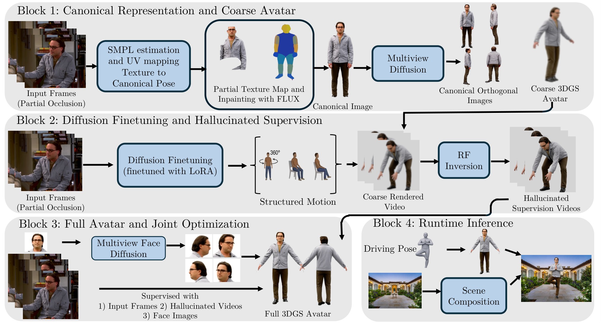
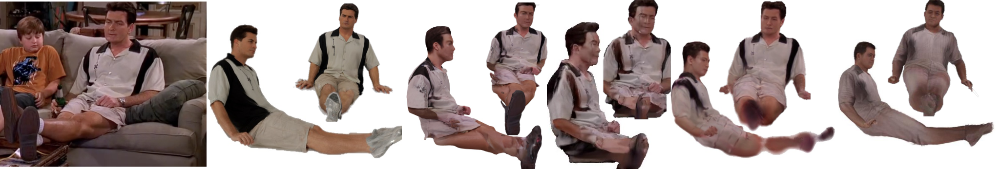
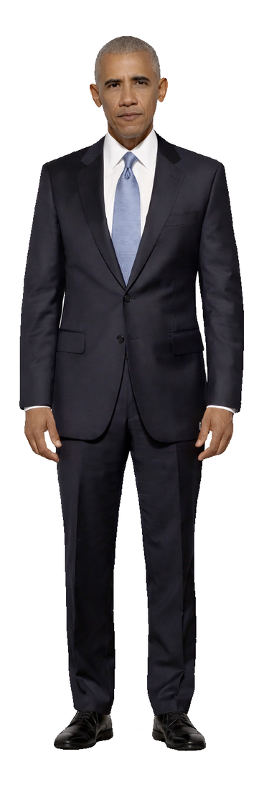
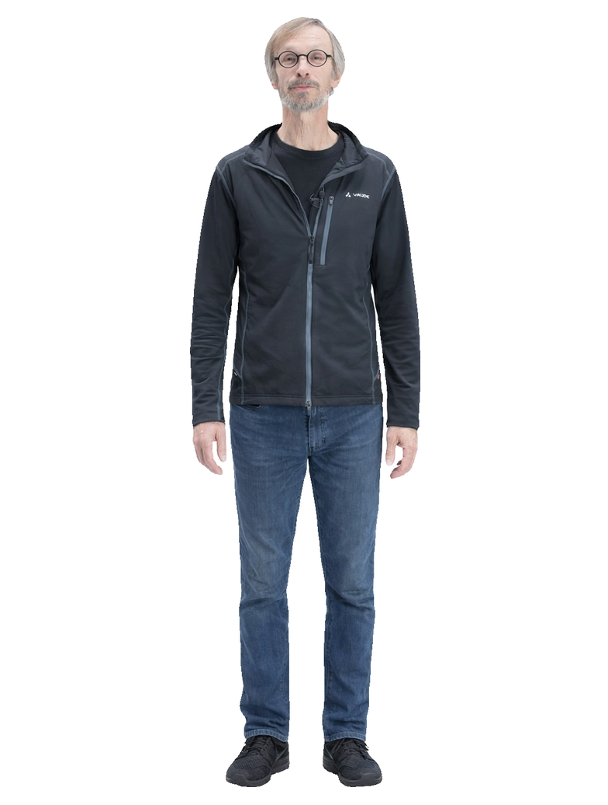
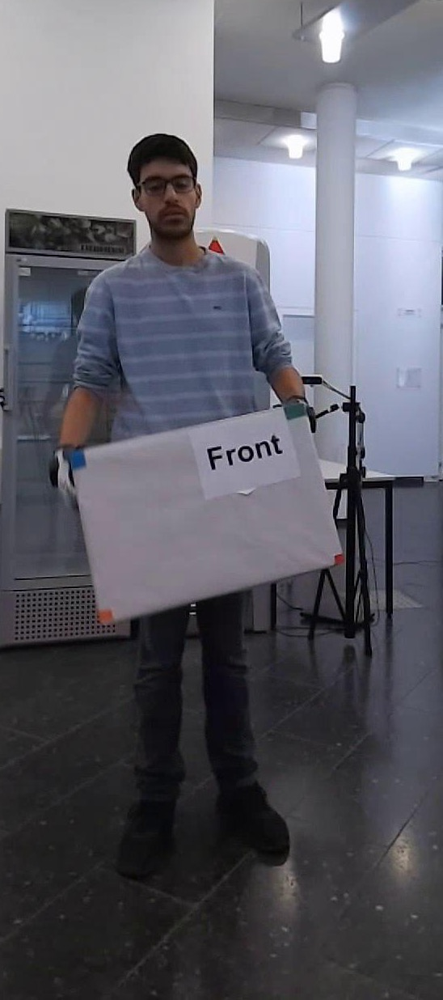
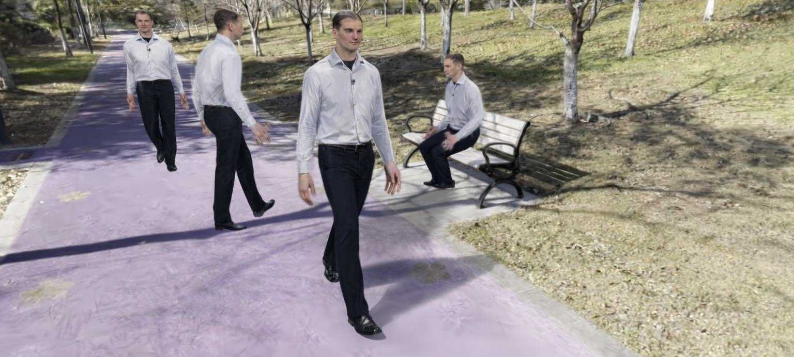
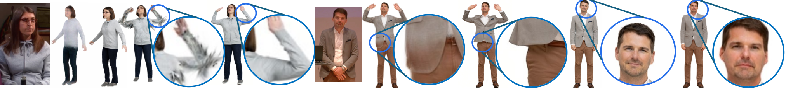

AHOY! 来自图宾根 AI Center、MPI-INF、帝国理工与 KAUST,已中稿 ECCV 2026。它要解决的是一件被整个领域刻意绕开的事:
| # | 贡献 | 解决的问题 |
|---|---|---|
| ① | hallucination-as-supervision:用身份微调的扩散模型为从未观测过的身体区域生成稠密监督 | 大片区域无任何直接监督 |
| ② | canonical → pose-dependent 两阶段架构:从稀疏观测 bootstrap 到完整的 pose-dependent 高斯图 | 每个姿态都没有多视角监督,无法学姿态相关形变 |
| ③ | map-pose / LBS-pose 解耦:吸收生成数据带来的多视角不一致 | 扩散生成的多视角视频几何上互相不一致,直接训会产生伪影 |
| ④ | head/body 分开监督:保住面部身份 | 视频扩散模型生成的人脸身份不一致 |
论文的批评非常直白:基于 NeRF 与 3DGS 的 avatar 方法已经能产出高保真、可实时摆动姿态的结果,但这些方法都假设输入无遮挡、主体全身可见、常常还是规范姿态。
大片身体区域从未被观测,avatar 的相当一部分没有任何直接监督。论文用三步解决:① 先从「部分观测主体生成的多视角图像」建一个粗 3DGS avatar;② 让粗 avatar 做结构化运动,用身份微调的视频扩散 + 扩散反演把渲染结果精修成幻觉监督视频;③ 用这些幻觉视频训练带姿态相关形变的完整 avatar。
高保真 avatar 需要 pose-dependent 形变来刻画衣物随身体构型的变化。但第一阶段没有任何针对姿态相关形变的多视角监督,所以只能先学一个不建模姿态相关形变的 avatar(时间不变的 canonical 高斯图)。缺失的监督靠第二阶段设计的结构化运动序列补齐——这构成了「canonical → pose-dependent」这一步的架构洞察。
每段幻觉视频是独立从扩散模型采样的,因此跨视角、跨帧并不几何一致。naive 地在这上面训练会产生伪影。解法是引入两个不同的姿态:一个「map pose」(跨相似姿态帧共享,保证高斯属性预测一致)与一个「LBS pose」(逐帧优化,用来吸收扩散模型固有的几何不一致)。
视频扩散模型生成的人脸身份不一致。做法是通过 SMPL-to-FLAME 顶点对应把 avatar 划分成头与身体,把头部像素从基于扩散的身体监督中 mask 掉,改用专门的多视角人脸扩散模型监督头部以保身份。
给定一段人体被部分遮挡的单目视频,目标是重建完整的、可动画的 3D 高斯 avatar,并可用任意姿态驱动。流水线分四步:
| 符号 | 含义 | 取值 / 备注 |
|---|---|---|
| $\{\mathbf{I}_t\}_{t=1}^{T}$ | 输入单目视频帧 | — |
| $(\bm{\theta}_t,\bm{\beta})$ | 逐帧 SMPL 姿态 / 共享形状参数 | 由 NLF 估计 |
| $\{\mathbf{M}_t\}$ | 可见性掩码 | 由 SAM 3 得到 |
| $\bm{\theta}_{*}$ | 固定的正面规范姿态 | — |
| $\mathbf{I}_{*}^{\mathrm{part}}$ | 部分规范姿态图像(未观测区域为空) | 由 DensePose 反查 warp 得到 |
| $\mathbf{I}_{*}$ | 完整规范姿态图像 | 由 FLUX inpainting 补全 |
| $V$ | 规范姿态视角数 | $V=4$(前 + 后 + 左 + 右) |
| $\{\bm{\gamma}_v\}$ | 规范视角相机 | 正交相机 |
| $N_H$ | SMPL 网格上采样的点数 / 高斯数 | 论文未给出具体值 |
| $\mathcal{G}^{H}_{*}$ | canonical 高斯模板 | 由 $N_H$ 个点定义 |
| $S$ | StyleUNet,预测逐像素高斯属性偏移 + 蒙皮权重 | 第三阶段会重新初始化 |
| $\mathbf{w}^{H}_{k,j}$ | 第 $k$ 个高斯的第 $j$ 个关节蒙皮权重 | $j=1,\dots,J$ |
| $\mathcal{T}(\mathcal{G}^{H};\bm{\theta})$ | LBS 形变算子 | 由 $\mathbf{w}$ 驱动 |
| $\mathbf{v}_{\phi}$ | 身份微调后的速度场 | 基于 Wan 2.2 |
| $[\mathrm{v}]$ | 绑定目标身份的可学习文本 token | 在文本编码器嵌入空间中学习 |
| $\mathbf{A}\mathbf{B}$ | LoRA 更新,$\mathbf{W}'=\mathbf{W}+\mathbf{A}\mathbf{B}$ | — |
| $N$ | 结构化运动序列数 | 论文未给出具体值 |
| $\{\tilde{\mathbf{V}}_n\}_{n=1}^{N}$ | 幻觉监督视频集 | RF-Inversion 产出 |
| $\bm{\theta}^{\mathrm{map}}_{n}$ | map pose:StyleUNet 的输入,序列内固定 | 每个序列共享 |
| $\bm{\theta}^{\mathrm{lbs}}_{n,t}$ | LBS pose:把高斯形变到 posed 空间,逐帧变化 | 逐帧 |
| $\Delta\bm{\theta}_{n,t}$、$\Delta\bm{\gamma}_{n,t}$ | 逐帧 LBS 姿态修正 / 相机修正 | 可学习 |
| $\bm{\psi}_{p}$ | FLAME 表情参数 | 头部路径 |
| $\mathcal{H}_{\mathrm{head}}$ | SMPL 头部区域对应的高斯索引集合 | $\subset\{1,\dots,N_H\}$ |

补全后的规范图像只提供一个视角。为了获得更广覆盖,用预训练的多视角扩散模型生成 $V-1=3$ 个额外的规范姿态视角(后、左、右),丢弃它的 3D 重建分支。连同正面视角 $\mathbf{I}_{*}^{1}=\mathbf{I}_{*}$,得到 $V=4$ 张规范姿态图像 $\{\mathbf{I}_{*}^{v}\}_{v=1}^{V}$,相机 $\{\bm{\gamma}_v\}$ 已知且为正交。
沿用既有工作(论文引用 [85] 与 [71])的做法:在规范姿态 $\bm{\theta}_{*}$ 的 SMPL 网格上稠密采样 $N_H$ 个点,定义 canonical 高斯模板 $\mathcal{G}^{H}_{*}$;从正面与背面投影生成 canonical 位置图,建立像素到高斯的一一对应。
一个 StyleUNet $S$ 处理 canonical 位置图,为每个高斯属性预测相对模板的逐像素偏移,得到 canonical 高斯集合 $\mathcal{G}^{H}=S(\bm{\theta}_{*})$。此外 $S$ 还预测每个高斯的蒙皮权重 $\mathbf{w}^{H}_{k,j}$,$j=1,\dots,J$ 为关节索引。
对每一帧 $t$,用估计姿态 $\bm{\theta}_t$ 通过线性混合蒙皮(LBS)与预测的蒙皮权重 $\mathbf{w}^{H}_{k,j}$ 把 canonical 高斯形变到 posed 空间,记整个形变为 $\mathcal{T}(\mathcal{G}^{H};\bm{\theta}_t)$。颜色与不透明度保持 StyleUNet 的预测不变。
粗 avatar 由两个来源监督:① 已知相机下的 $V$ 张规范姿态图像;② 估计姿态与观测相机 $\bm{\gamma}^{\mathrm{obs}}$ 下的 $T$ 帧观测视频。记 $\hat{\mathbf{I}}_{t}=\mathcal{R}(\mathcal{T}(\mathcal{G}^{H};\bm{\theta}_{t});\bm{\gamma}^{\mathrm{obs}})$ 为第 $t$ 帧渲染结果:
其中 $\odot$ 为逐元素乘,$\mathbf{M}_t$ 把遮挡区域 mask 掉。另加一个同样带掩码的感知损失(细节在补充材料)。结果是一个「对可见部分忠实、但未观测区域有伪影」的粗 avatar。
| 输入 | 层 / 算子 | 输出 |
|---|---|---|
| SMPL 网格上采样 $N_H$ 个点 | 正 / 背面投影 | canonical 位置图(像素↔高斯一一对应) |
| canonical 位置图 | StyleUNet $S$ | 逐像素高斯属性偏移 + 蒙皮权重 $\mathbf{w}^H_{k,j}$ |
| canonical 高斯 + 姿态 $\bm{\theta}_t$ | LBS 形变 $\mathcal{T}$ | posed 空间高斯 |
| posed 高斯 + 相机 $\bm{\gamma}$ | 可微光栅化 $\mathcal{R}$ | 渲染图像 $\hat{\mathbf{I}}$ |
见式(1)。监督的拆项结构决定了「未观测区域无监督」这一后果。
式(1)的 masked L1 + 同掩码感知损失。关键局限:未观测区域无监督(被 $\mathbf{M}_t$ 屏蔽)。
阶段二的逻辑起点很清晰:粗 avatar 只被 $V=4$ 张规范视角图与被遮挡的输入帧监督。这个覆盖度意味着未观测区域(背部、手臂内侧、被遮挡物持续挡住的任何区域)重建质量差,且 avatar 无法泛化到训练中未见的新姿态与新相机角。
论文把 Dynamic Concepts 的身份编码阶段适配到 Wan 2.2 上:
其中 $\mathbf{z}_{0}=\mathsf{Enc}(\mathbf{I}_{t})$ 是 VAE 编码的 latent;$\mathbf{z}_{1}\sim\mathcal{N}(\mathbf{0},\mathbb{I})$ 是噪声($\mathbb{I}$ 为单位矩阵);$\mathbf{z}_{\tau}=(1-\tau)\mathbf{z}_{0}+\tau\mathbf{z}_{1}$ 是流时间 $\tau\in[0,1]$ 处的插值 latent;速度场由施加在预训练权重 $\mathbf{W}$ 上的 LoRA 更新 $\mathbf{W}'=\mathbf{W}+\mathbf{A}\mathbf{B}$ 参数化。
不是随便生成任意动作,而是精心策划 $N$ 段运动序列,目的有二:① 系统性地把所有身体表面暴露给相机;② 提供学习 pose-dependent 高斯图所需的多视角覆盖。
每段序列把一个目标身体动作(如抬臂、双臂高举)与一次完整 360° 身体旋转配对。
关键观察:这种序列里的所有帧都可以视为同一姿态在不同角度下的视图——身体动作近似恒定,而旋转扫过了人的四周。因此一段 $T'$ 帧的转体,提供了对单一姿态的 $T'$ 视角监督,使模型能学到「在该特定身体构型下,高斯表示从每个方向看应该是什么样」。
某些姿态(如坐姿)与全身转体不兼容。对这些姿态,论文生成同一坐姿在多个不同相机角度下的多段视频,然后把姿态匹配的帧跨视频同步,用所有对应视频的图像监督每个姿态。
这提供了与转体序列「视频内多视角」等价的跨视频多视角监督。
对每个运动序列 $n$,用对应的姿态 $\{\bm{\theta}'_t\}_{t=1}^{T'}$ 驱动粗 avatar,并从观测相机 $\bm{\gamma}^{\mathrm{obs}}$ 渲染:
这些渲染捕捉到了正确的身体姿态与轮廓,但在输入视频中被遮挡的区域带有伪影与缺失纹理。
精修的方式是把每段视频过一遍身份微调模型的 latent 空间,用 RF-Inversion 把伪影替换成身份一致的外观。记 $\mathsf{Enc}$ / $\mathsf{Dec}$ 为 VAE 编解码器,$\mathbf{z}_{0}=\mathsf{Enc}(\hat{\mathbf{V}}_{n})$ 为编码后的粗视频:正向前向整流流 ODE 把它映射到噪声 latent $\mathbf{z}_{1}$,再用身份微调模型反向流动并解码出幻觉视频:
对全部 $N$ 段运动序列施加该过程,得到幻觉视频集 $\{\tilde{\mathbf{V}}_{n}\}_{n=1}^{N}$,它提供了后续训练完整 avatar 所需的多视角身体覆盖。
阶段一用的是时间不变的 canonical 图,因为当时没有针对多个姿态的多视角监督。现在幻觉视频提供了这个覆盖:
有了这些稠密覆盖,就可以按既有工作(Animatable Gaussians 系)的做法升级为 pose-dependent 高斯图:对每一帧把 posed SMPL 顶点投影到前 / 后 UV 图,并用一个重新初始化的 StyleUNet $S$ 以这些 pose-dependent 图为输入,预测相对 canonical 模板的逐像素高斯属性偏移:
| 角色 | 符号 | 作用 | 粒度 |
|---|---|---|---|
| map pose | $\bm{\theta}_{n}^{\mathrm{map}}$ | 作为 StyleUNet $S$ 的输入,决定生成哪一套高斯属性 | 序列内固定(所有帧共享) |
| LBS pose | $\bm{\theta}_{n,t}^{\mathrm{lbs}}$ | 把 $S$ 预测出的高斯形变到 posed 空间 | 逐帧变化 |
因为幻觉视频是无遮挡的,可以直接用 NLF 估计 SMPL 姿态,并假设相机在 NLF 参考系下。这些估计同时初始化两件事:map pose $\bm{\theta}_{n}^{\mathrm{map}}$(用于构造 $S$ 的 pose-dependent 输入图)与逐帧 LBS pose $\bm{\theta}_{n,t}^{\mathrm{lbs}}$。
优化的东西有三类,同时进行:① StyleUNet $S$ 本身(重新初始化);② 逐帧 LBS 姿态修正 $\{\Delta\bm{\theta}_{n,t}\}$;③ 逐帧相机修正 $\{\Delta\bm{\gamma}_{n,t}\}$。
记 $\tilde{\mathbf{I}}_{n,t}$ 为第 $n$ 段幻觉视频的第 $t$ 帧。用 Sapiens 与 SAM 3 得到的分割掩码 $\mathbf{M}_{n,t}^{\mathrm{head}}$ 排除头部像素(因为扩散生成的人脸对身份保真不可靠)。身体监督损失为:
其中 $\hat{\mathbf{I}}_{t}^{\mathrm{obs}}$ 用原始估计的姿态与相机(不加修正)渲染。这一项是防止「幻觉漂移太远」的锚点——它始终把 avatar 拉回真实观测。
| 输入 | 层 / 算子 | 输出 |
|---|---|---|
| pose-dependent 前后 UV 图(由 $\bm{\theta}^{\mathrm{map}}_{n}$ 投影得来) | StyleUNet $S$(重新初始化) | $\mathcal{G}^{H}_{n}$:该姿态下的高斯集 |
| $\mathcal{G}^{H}_{n}$ + $\bm{\theta}^{\mathrm{lbs}}_{n,t}+\Delta\bm{\theta}_{n,t}$ | LBS 形变 $\mathcal{T}$ | posed 空间高斯 |
| posed 高斯 + $\bm{\gamma}^{\mathrm{obs}}+\Delta\bm{\gamma}_{n,t}$ | 可微光栅化 $\mathcal{R}$ | $\hat{\mathbf{I}}_{n,t}$ |
| 渲染 + 掩码 $1-\mathbf{M}^{\mathrm{head}}$ | 式(5) L1 | 梯度回传到 $S$、$\Delta\bm{\theta}$、$\Delta\bm{\gamma}$ |
式(5)。可学习量是 $\{S,\Delta\bm{\theta}_{n,t},\Delta\bm{\gamma}_{n,t}\}$;map pose 是固定输入,不是可学习量——这一点是解耦的核心。
式(5)身体损失(屏蔽头部)+ 观测帧损失 $\mathcal{L}_{\mathrm{obs}}$。头部由独立路径监督(见 §9)。
其中 $\mathcal{H}_{\mathrm{head}}\subset\{1,\ldots,N_{H}\}$ 是 SMPL 头部区域对应的高斯索引集合。
其中 $\mathcal{T}_{\mathrm{FLAME}}$ 对头部高斯施加基于 FLAME 的形变,但它们的 canonical 位置与整体身体表示是共享的。
其中 $\mathcal{L}_{\mathrm{per}}$ 是感知损失,$\mathcal{L}_{\mathrm{reg}}$ 把蒙皮权重正则向 SMPL 推导出的值。论文没有给出具体的 $\lambda$ 数值(原文只写这些系数用于平衡各项),细节在补充材料。
arxiv.org/html/2603.17975v2)均未给出。本笔记尝试从项目页的补充材料 PDF 获取,但该 PDF 始终无法连通(SSL 握手超时 / UNEXPECTED_EOF,重试多次均失败),因此未能核实。所有相关项在 §11 中标为「未获取」。
前面各阶段产出一个完整的、可动画的 3DGS avatar,可以由任意 SMPL 姿态通过 LBS + pose-dependent 高斯图驱动。动画部分沿用 AHA! 的做法在重建好的 3DGS 场景中驱动 avatar。为防分布外伪影,推理时施加基于 PCA 的姿态投影,把新驱动姿态约束到训练分布内(细节在补充材料)。
给定一个从随手手机视频重建的静态高斯集 $\mathcal{G}^{S}$ 与 $T''$ 帧驱动运动 $\{\bm{\theta}_{t}\}$:
| 阶段 | 输入 | 输出 | 可训练部分 |
|---|---|---|---|
| 1 粗 avatar | 遮挡视频 + SMPL 估计 + FLUX 补全图 + 4 规范视角 | canonical 高斯图 + StyleUNet | StyleUNet、高斯属性(含蒙皮权重) |
| 2a 身份微调 | 输入视频(作为无序帧) | 身份专属视频扩散模型 $\mathbf{v}_\phi$ | LoRA $\mathbf{A}\mathbf{B}$、文本 token $[\mathrm{v}]$ |
| 2b/2c 幻觉 | 粗 avatar 的转体 / 静姿渲染 | 幻觉监督视频集 $\{\tilde{\mathbf{V}}_n\}$ | 无可训练参数(纯推理) |
| 3b/3c 完整 avatar | 幻觉视频 + CAP4D 头部图像 | pose-dependent 高斯图 + 完整 avatar | StyleUNet(重初始化)、$\Delta\bm{\theta}$、$\Delta\bm{\gamma}$、头部高斯 |
miraymen.github.io/ahoy/static/ahoy_supplementary.pdf,8 页,2.5 MB)取到了完整的架构规格与逐阶段训练配置,以下数值均出自该 PDF 的 Sec. 8–9。论文与补充材料均未公开代码,故无 file:line 级佐证。
| 部件 | 规格 |
|---|---|
| 输入 | $512\times512$ 位置图,3 通道 |
| 初始卷积 | $3\to128$ 通道,输出 $256\times256$ |
| Encoder | 5 个 ConvBlock 逐步降采样到 $8\times8$ bottleneck(512 通道);每级把位置图独立降采样后经 $1\times1$ 卷积作为残差加回主特征路径 |
| 通道宽度 | 128@$256^2$ → 256@$128^2$ → 512@$64^2$ 至 $8^2$ |
| Decoder | 两条并行分支(前 / 后 UV 图);6 个上采样级,用 StyleGAN2 式 $3\times3$ 调制卷积(权重解调 + 逐像素噪声注入) |
| 分辨率提升 | bottleneck → $512\times512$(Haar 小波域)→ 逆 Haar 变换 → $1024\times1024$ |
| Decoder 通道 | 512($16^2$–$64^2$) → 256@$128^2$ → 128@$256^2$ → 64@$512^2$;标准 U-Net skip 逐级拼接 |
| 最终输出图 | $1024\times2048$(前后两张 UV 图并排) |
| Style 映射网络 | 像素归一化 + 两个等化学习率线性层($512\to512$,lr_mul=0.01);style 向量为 512 维,初始化为常数单位向量,推理时固定不变 |
| 输出头 | 三个:① 颜色头($C_{out}=3$,RGB 偏移);② 位置头($C_{out}=3$,3D 位置偏移,缩放 0.05);③ 属性头($C_{out}=8$:不透明度 1 + 尺度 3 + 旋转四元数 4) |
| 视角相关颜色 | 小型 CNN(Conv2d(1→64, 4×4, s2) + LeakyReLU → Conv2d(64→128, 4×4, s2))编码视角方向点积图(表面法线与视向的点积),在 decoder 的 $256\times256$ 层加性注入 |
| 额外输出 | 逐高斯蒙皮权重 $\mathbf{w}^{H}_{k,j}$ |
| 项 | Stage 1 粗 avatar | Stage 2 身份 LoRA | Stage 3 完整 avatar |
|---|---|---|---|
| 预热 | 先在 canonical 图上训 约 2,000 迭代,目标偏移为零(强制先学恒等映射) | — | 先在随机姿态相关图上训 约 2,000 迭代,以粗 avatar 的最终高斯为目标 |
| 优化器 | Adam($\beta_1{=}0.9$,$\beta_2{=}0.999$) | AdamW($\beta_1{=}0.9$,$\beta_2{=}0.99$,weight decay 0.01) | Adam($\beta_1{=}0.9$,$\beta_2{=}0.999$) |
| 初始学习率 | $10^{-4}$ + 余弦退火($\eta_{min}=0.05$) | LoRA $10^{-4}$;文本 token $10^{-5}$ | $10^{-4}$ + 同一余弦退火 |
| 总迭代数 | 400,000 | 600 | 500,000 |
| batch size | 1 | 8 | 1 |
| 每迭代监督 | 随机取一个相机视角,渲染 $512\times512$ patch | — | 随机取一个相机视角,渲染 $512\times512$ patch |
| 损失权重 | $\lambda_1{=}1.0$,$\lambda_{per}{=}0.1$,$\lambda_{reg}{=}0.005$ | — | $\lambda_{body}{=}1.0$,$\lambda_{obs}{=}1.0$,$\lambda_{head}{=}0.5$,$\lambda_{per}{=}0.1$,$\lambda_{reg}{=}0.005$ |
| 其他 | — | 梯度裁剪 max norm 0.05;LoRA $\mathbf{B}$ 矩阵 dropout 0.8;文本 prompt dropout 0.1 | $\{\Delta\bm{\theta}_{n,t}\},\{\Delta\bm{\gamma}_{n,t}\}$ 初始化为零 |
在训练期间收集的位置图特征 $\{x_t\}$ 上做 PCA,保留 $N_{pca}$ 个主成分 $S$ 及其标准差 $\{\sigma_i\}$。对新的驱动姿态位置图特征 $x$:
$\bar{x}$ 为训练均值。把系数裁剪到 $\pm2\sigma$ 内即把新姿态约束在训练分布内,保证 StyleUNet 收到分布内输入。
即先按蒙皮权重加权融合各关节旋转矩阵得到逐高斯旋转,再同时变换均值与协方差(协方差用 $\mathbf{R}\bm{\Sigma}\mathbf{R}^\top$ 保持正半定)。
| 项 | 状态 | 说明 |
|---|---|---|
| 训练迭代数 | ✅ 已知 | 400k(粗)+ 600(LoRA)+ 500k(完整)+ 3×2k 预热 |
| GPU 型号 / 数量 | 论文与补充材料均未给出 | 无法判断单卡可行性 |
| 训练总时长 | 未给出 | 900k 迭代 × batch 1 的开销只能大致推断,本笔记不做估计 |
| 推理显存 | 未给出 | — |
| 推理耗时 | 未给出 | 论文只说「显著慢于前馈方法」 |
| 高斯数量 $N_H$ | 未给出 | 只说明「在 SMPL 网格上稠密采样」 |
| 运动序列数 $N$ | 未给出 | 只说精心设计了若干段 |
| 头部视角数 $P$ | 未给出 | — |
| 项 | 设定 |
|---|---|
| 基准一 | BEHAVE:4 台 Kinect 相机的多视角捕获,人体与物体交互 → 显著遮挡;评测 8 个序列。有多视角真值,可做严格定量评测 |
| 基准二 | YouTube 视频:自采集 50 段,涵盖多样日常活动且具显著遮挡。无多视角真值,因此与原视频的留出帧比较 |
| 指标 | PSNR / SSIM / LPIPS |
| baseline 输入设置 | 两种:① 直接给原始遮挡帧(视频第一帧);② 给本流水线生成的无遮挡规范姿态图像(即给 baseline 最好的输入) |
| baseline 选择 | 可动画方法:LHM、IDOL;静态重建方法:PSHuman、SyncHuman(二者不产出可动画 avatar) |
| 方法 | YouTube 静态 · 遮挡输入 | YouTube 静态 · 规范姿态输入 | BEHAVE · 新视角 | BEHAVE · 新姿态 | ||||||||
|---|---|---|---|---|---|---|---|---|---|---|---|---|
| PSNR↑ | SSIM↑ | LPIPS↓ | PSNR↑ | SSIM↑ | LPIPS↓ | PSNR↑ | SSIM↑ | LPIPS↓ | PSNR↑ | SSIM↑ | LPIPS↓ | |
| PSHuman | 19.47 | 0.811 | 0.197 | 21.88 | 0.858 | 0.145 | 18.47 | 0.812 | 0.198 | n/a | ||
| SyncHuman | 19.82 | 0.819 | 0.189 | 22.03 | 0.863 | 0.140 | 19.34 | 0.831 | 0.172 | n/a | ||
| LHM | 19.12 | 0.803 | 0.207 | 21.18 | 0.845 | 0.160 | 18.21 | 0.807 | 0.203 | 16.93 | 0.774 | 0.238 |
| IDOL | 17.31 | 0.771 | 0.241 | 19.78 | 0.819 | 0.189 | 17.38 | 0.783 | 0.231 | 15.87 | 0.748 | 0.267 |
| Ours(AHOY) | 22.01 | 0.881 | 0.109 | 23.05 | 0.892 | 0.098 | 24.12 | 0.905 | 0.090 | 22.81 | 0.889 | 0.110 |
| 方法 | 遮挡输入 | 规范姿态输入 | ||||
|---|---|---|---|---|---|---|
| PSNR↑ | SSIM↑ | LPIPS↓ | PSNR↑ | SSIM↑ | LPIPS↓ | |
| LHM | 19.03 | 0.821 | 0.181 | 20.17 | 0.842 | 0.159 |
| IDOL | 16.52 | 0.769 | 0.231 | 18.52 | 0.808 | 0.191 |
| AHOY(本文) | 22.81 | 0.887 | 0.107 | 22.83 | 0.888 | 0.106 |





| 配置 | 新视角 | 新姿态 | ||||
|---|---|---|---|---|---|---|
| PSNR↑ | SSIM↑ | LPIPS↓ | PSNR↑ | SSIM↑ | LPIPS↓ | |
| AHOY(完整) | 24.12 | 0.905 | 0.090 | 22.81 | 0.889 | 0.110 |
| (A) 仅粗 avatar | 16.10 | 0.753 | 0.258 | 14.30 | 0.718 | 0.301 |
| (B) 去掉 RF-Inversion | 21.10 | 0.862 | 0.143 | 19.40 | 0.838 | 0.168 |
| (C) 去掉 map/LBS 解耦 | 22.60 | 0.886 | 0.118 | 20.60 | 0.856 | 0.152 |
| (D) 去掉 head/body 拆分 | 23.60 | 0.898 | 0.098 | 22.20 | 0.882 | 0.120 |
| 配置 | ΔPSNR(新视角) | ΔPSNR(新姿态) | 解读 |
|---|---|---|---|
| (A) 仅粗 avatar | −8.02 dB | −8.51 dB | 最大贡献者。这行同时去掉了「幻觉监督」与「pose-dependent 外观」两件事,巨大跌幅说明后两个阶段的存在本身就是核心 |
| (B) 去掉 RF-Inversion | −3.02 dB | −3.41 dB | 第二大。注意它并没有把幻觉监督整个去掉,只是把「过一遍身份微调 latent 空间」这一步换成直接监督——说明「精修」本身贡献约 3 dB |
| (C) 去掉 map/LBS 解耦 | −1.52 dB | −2.21 dB | 第三。新姿态上的跌幅(−2.21)大于新视角(−1.52),与设计意图一致——解耦主要解决「跨帧 / 跨视角不一致在摆新姿态时暴露」的问题 |
| (D) 去掉 head/body 拆分 | −0.52 dB | −0.61 dB | 数值上最小,但见下方保留意见 |

—。
| 方法 | 年份 | 输入假设 | 场景表示 | 监督信号 | 训练数据 | 训练规模 | 推理耗时 | 显存 | 关键指标 | 开源 |
|---|---|---|---|---|---|---|---|---|---|---|
| AHOY!(本文) | 2026-03(ECCV 2026) | 单目 in-the-wild 视频,允许重度遮挡;需 NLF 估 SMPL、SAM3 出掩码 | 完整可动画 3DGS avatar(StyleUNet 预测 pose-dependent 高斯图) | 粗阶段 masked L1 + 感知;完整阶段幻觉视频 L1 + FLUX/扩散路径 | 自采 50 段 YouTube 视频(评测)/ BEHAVE 8 序列 | 粗 400k + 完整 500k 迭代,batch 1;GPU 未给 | 未给出 | 未给出 | YouTube 22.01 / 23.05 dB;BEHAVE 24.12 / 22.81 dB | 否(项目页无 Code 链接) |
| LHM | 2025(ICCV) | 单张图 → 前馈出可动画人体 | 可动画 3DGS / 人体表示 | 大规模人体数据监督 | 大规模人体数据集 | — | 论文称「秒级」前馈 | — | YouTube 遮挡输入 19.12 dB;BEHAVE 新视角 18.21 dB | 是 |
| IDOL | 2025(CVPR) | 单张图 → 照片级 3D 人体 | 3D 人体表示 | — | — | — | — | — | YouTube 遮挡输入 17.31 dB;BEHAVE 新视角 17.38 dB | 是 |
| PSHuman | 2025(CVPR) | 单张图 → 照片级人体(静态) | 显式重网格化人体(非可动画) | 跨尺度多视角扩散 | — | — | — | — | YouTube 遮挡输入 19.47 dB;BEHAVE 新视角 18.47 dB | 是 |
| SyncHuman | 2025(NeurIPS) | 单张图(静态重建) | 2D + 3D 生成模型同步 | — | — | — | — | — | YouTube 遮挡输入 19.82 dB;BEHAVE 新视角 19.34 dB | — |
| StudioRecon | 2026-07(SIGGRAPH 2026) | 4 台低重叠未标定相机,多人遮挡 | 解耦背景高斯 + 逐人动态高斯 | 背景视图合成监督 + 人体 SMPL 几何约束 | EgoHumans / Harmony4D / Mobile Stage / SelfCap | 背景 7k + 人体 10k 迭代;单张 A6000 | 视图合成 50 min / 增强 3.3 s 每帧(单卡 A6000) | 未给出(单卡 A6000 可跑) | 360° 场景 18.58–22.75 dB | 是(完整 Python 源码) |
所有 baseline 都假设输入无遮挡。AHOY 是唯一把「遮挡」当成默认情况而非边界情况的方法。所以它在遮挡场景下的 +3~4 dB 优势,本质是问题设定上的错位,而不是同一个问题上的技术碾压。
绝大数用生成模型做监督的工作,都在努力让生成更一致。AHOY 反过来:承认生成一定不一致,然后在表示层开一个自由度去吸收它(map/LBS 解耦)。这个转向在工程上更可行,因为「让扩散模型跨视角一致」是个开放难题,而「给姿态加一个可优化修正量」是标准操作。
用「目标动作 + 360° 转身」把「一个姿态的 $T'$ 帧」等价转换为「一个姿态的 $T'$ 个视角」。这不是数据增强,而是把数据采集问题转化为控制问题——因为你控制 avatar,所以你能决定它被怎样观察。
| 范式 | 代表方法 | 核心先验 | 局限 |
|---|---|---|---|
| 多视角/受控采集重建 | NeRF / 3DGS 系人体重建、Animatable Gaussians | 稠密多视角 + 每姿态有覆盖 | 需要受控采集,无法用于日常视频 |
| 单图前馈重建 | LHM、IDOL、PSHuman、SyncHuman | 大规模人体数据学到的强外观先验 | 假设输入无遮挡;遮挡下崩 |
| 生成当补全器(单目+遮挡) | AHOY! | 身份微调视频扩散提供未观测区域监督;map/LBS 解耦吸收不一致;head/body 拆分保身份 | 慢;质量受扩散模型上界限制;依赖链长;未开源 |
| 人机分工(背景交生成、人体交几何) | StudioRecon | 视频扩散只负责背景;人体由 SMPL 强几何约束 | 需要多视角(4 路)输入;人体细节受 SMPL 表达力限制 |
| 多视角视频扩散绕过几何先验 | Flex4DHuman | 只有相对相机位姿;不需要骨架/深度/法线 | 一致性完全压给生成模型;绝对尺度丢失 |
判断基准:本库主线是单卡 RTX 3090(24GB)、WSL2、12–16 路中等稀疏可控场景、目标是人体;而 AHOY 的设定是单目 in-the-wild 视频 + 重度遮挡。两者的匹配关系比较微妙,需要逐项看。
| 维度 | AHOY 的情况 | 与我们的匹配度 |
|---|---|---|
| 输入形态 | 单目视频(1 视角) | 比我们的场景更宽松——我们有多视角,而它连一个都没用满 |
| 遮挡处理 | 把遮挡当默认情况,正面解决 | 高价值——我们的多人场景同样存在相互遮挡,目前是当作「要过滤掉的干扰」处理(见 微动人体三维重建调研)。AHOY 的思路是把遮挡区域交给生成先验,而不是丢弃观测 |
| head/body 拆分 | 用 SMPL-to-FLAME 对应把头/身体分成两部分,各自独立监督,但共享同一套 canonical 高斯 | 与本库的 head_gs / body_gs / scene_gs 拆分直接同构,而且它给出了一个关键设计原则:拆分应该是「监督与形变算子分开」而不是「两套独立高斯拼起来」——后者会产生接缝 |
| map/LBS 解耦 | 用参数共享 + 逐帧修正量吸收生成数据的不一致 | 可迁移——我们的 SAM3 person mask ID 映射与 track 去重本质也在处理「多视角不一致」,但它处理的是身份不一致,AHOY 处理的是几何不一致 |
| 面部身份保持 | 用专用多视角人脸扩散模型(CAP4D)替换掉不可靠的通用扩散人脸 | 可迁移——我们的人脸增强链路(HYPIR / SAM3)同样面临「通用增强会改变身份」的问题,「对不可靠区域屏蔽通用监督 + 换专用监督」是一条明确的解法 |
| 算力与速度 | 900k 迭代 + 多轮扩散推理;GPU/显存/耗时全未给 | 不可用。我们无法评估在 3090 上要跑多久 |
| 开源 | 项目页无 Code 链接;GitHub 检索无相关仓库 | 无法采用 |
| 数据前提 | 需要 NLF 估 SMPL + DensePose UV + 可用的 FLUX 修复 | NLF 与 DensePose 我们链路里没有;引入成本不低 |
[高优先级] 幻觉的质量没有任何「可信度」度量,而这是整条链的命门。
问题:作者自己在 Conclusion 里承认「身份微调模型可能对从未被观测的区域幻觉出看似合理但错误的细节」。但论文没有给出任何量化「幻觉对了吗」的实验——没有把幻觉结果与真值比较(在 BEHAVE 上其实是可以的,因为 BEHAVE 有多视角真值)。
佐证:§5 原文 "the identity-finetuned model may hallucinate plausible but incorrect details for body regions that are never observed";BEHAVE 的评测只报告最终渲染指标,未单独报告幻觉视频的质量。
改进建议:在 BEHAVE 上做一组「遮挡受控实验」:人为遮挡某人体的固定区域比例(如 30% / 50% / 70%),然后测量「幻觉出来的区域」与真值的误差。这能直接给出「遮挡容忍度曲线」,而这正是使用者最需要的先验知识。
[高优先级] 「面部身份保持」这个核心贡献缺乏针对面部的定量指标。
问题:贡献④ 是「保住面部身份」,消融 (D) 是「去掉 head/body 拆分」,但评测只用 PSNR / SSIM / LPIPS 三个整体指标,消融 (D) 的跌幅仅 0.5–0.6 dB(见 §13.2)。整体指标对面部身份的敏感度极低,导致这一贡献在定量上看起来无关紧要,而其真实重要性只能靠 Fig.7(D) 的定性图来体现。
改进建议:补三组指标——① 人脸区域的裁剪 PSNR/LPIPS;② Face ID 相似度(如 ArcFace 嵌入余弦);③ 面部 landmark 误差。本库里 SAM 3D Body 与 MHR 笔记都涉及密集面部 landmark,可以借用同一套评估口径。
[中优先级] map pose 在整个训练中固定,但论文没有论证「固定」优于「也参与优化」。
问题:设计上 map pose 是固定输入,LBS pose 逐帧可修正。这是一个明确的二元选择,但论文没有做「只优化 map pose」「两个都优化」「都不优化」的对照。消融 (C) 只是把整个解耦机制去掉了。
改进建议:加一组「map pose 也允许微调」的对照。这会直接回答「解耦的有效性来自参数共享,还是来自可修正自由度」这个机制问题。
[中优先级] 结构化运动序列是人工设计的,没有说明覆盖度与冗余度。
问题:运动序列数 $N$ 未给出,也没说这些序列如何被挑选、是否覆盖了足够的姿态分布。而整个 pose-dependent 学习的监督完全来自这些序列——如果它们覆盖不足,后续的 PCA 姿态投影就会频繁触发裁剪。
改进建议:给出 $N$、姿态空间覆盖度指标(如与训练集姿态分布的距离分布),以及 PCA 裁剪被触发频率的统计。
[中优先级] YouTube 评测没有多视角真值,只有「与留出帧比较」。
问题:50 段 YouTube 视频的评测是「把重建结果渲染回输入视角,与原视频留出帧比较」。这是一个自洽性检查,不是新视角正确性检查——它无法证明未见区域重建对了。而 BEHAVE 有多视角真值,却只有 8 个序列。
改进建议:扩大 BEHAVE(或类似多视角遮挡数据集)上的评测规模,并明确区分「可见区域」与「不可见区域」的指标。
[中优先级] 用户自陈的偏见风险没有对应的任何实验。
问题:补充材料里写了「质量可能随人群、体型、服装风格而不均」,并建议未来工作审计。但论文自己没有做这个审计。
改进建议:这是一个相对便宜的实验——按人群/体型/服装风格分组报告指标即可。既然作者已经意识到了问题,顺手做掉比留作 future work 更有价值。
[高优先级] 资源账几乎全部缺失。
问题:GPU 型号、数量、训练总时长、推理显存、推理耗时全部未给出(补充材料只给了迭代数与优化器)。而论文明确包含「粗 400k + 完整 500k 迭代、batch size 1」这种重负载训练。这让任何人都无法评估可行性。
改进建议:照 StudioRecon 的做法给出逐阶段耗时表(它给了 Table S1:单张 A6000 上视图合成 50 min、人体位姿 3 min、背景重建 30 min、人体重建 40 min、增强 3.3 s/帧)。
[高优先级] 代码未开源,且已有 ECCV 2026 的中稿身份。
问题:项目页只提供论文、补充材料与视频;无 GitHub 链接。GitHub 全库检索「AHOY + occlusion」也没有对应仓库。也就是说这篇中稿了 ECCV 2026 的工作目前完全不可复现(且当年就已是中稿状态)。
改进建议:哪怕只放出粗 avatar 阶段 + StyleUNet 的代码,也能让「先学恒等映射预热」「Pose-dependent 高斯图」这些可复用组件被社区用起来。
| 优先级 | 改进点 | 理由 |
|---|---|---|
| [高] | 幻觉质量无「对不对」的度量 | 整条链的命门,却在 BEHAVE 上本可做而未做 |
| [高] | 面部身份缺专门定量指标 | 核心贡献在定量上被整体指标掩盖 |
| [高] | 资源账全缺 | 决定任何人能否评估可行性 |
| [高] | 代码未开源 | 中稿状态却不可复现 |
| [中] | map pose 不该固定这一点未做对照 | 机制层面的开放问题 |
| [中] | 结构化运动序列覆盖度未量化 | 决定 pose-dependent 学习的数据基础 |
| [中] | YouTube 评测是自洽性而非新视角正确性 | 影响结论强度 |
| [中] | 偏见风险自陈但未审计 | 便宜且作者已有意识 |
AHOY 属于综述里的「路线 C:生成当补全器 / 伪监督源」——与它同在路线 C 的是 StudioRecon(人机分工:背景交生成、人体交几何)。二者的差别值得记清:StudioRecon 不信任生成模型处理人体,只用它管背景;AHOY 则把人体本身未观测的部分整个交给生成模型。前者保守但稳,后者激进但能处理「连人体都没拍全」的极端情况。这两条分支代表了「生成先验用在人体上的哪一部分」这个问题的两种答案。
Aymen Mir(图宾根 AI Center)· Riza Alp Guler(帝国理工;DensePose 原作者)· Xiangjun Tang(KAUST)· Peter Wonka(KAUST,†共同指导)· Gerard Pons-Moll(图宾根 + MPI-INF,†共同指导)。
团队组合值得注意:Pons-Moll 组是 SMPL / 参数化人体的核心来源之一,而 Guler 是 DensePose 的作者——这解释了为什么 AHOY 的流水线在 SMPL + DensePose UV 这条几何路线上做得如此顺滑。
miraymen.github.io/ahoy/ 的全部外链为:arXiv、补充材料 PDF、四位作者的个人主页,以及若干机构 logo。没有任何指向代码仓库的链接。GitHub 检索 AHOY occlusion 无结果。会议状态:ECCV 2026(arXiv abs 的 comments 字段明确写 ECCV 2026)。